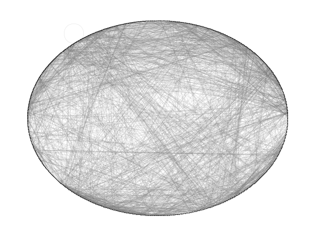

Note
Click here to download the full example code
Roget#
Build a directed graph of 1022 categories and 5075 cross-references as defined in the 1879 version of Roget’s Thesaurus. This example is described in Section 1.2 of
Donald E. Knuth, “The Stanford GraphBase: A Platform for Combinatorial Computing”, ACM Press, New York, 1993. http://www-cs-faculty.stanford.edu/~knuth/sgb.html
Note that one of the 5075 cross references is a self loop yet it is included in
the graph built here because the standard networkx DiGraph class allows self
loops. (cf. 400pungency:400 401 403 405).
The data file can be found at:
skipping self loop 400 400
Loaded roget_dat.txt containing 1022 categories.
DiGraph with 1022 nodes and 5075 edges
21 connected components
import gzip
import re
import sys
import matplotlib.pyplot as plt
import networkx as nx
def roget_graph():
"""Return the thesaurus graph from the roget.dat example in
the Stanford Graph Base.
"""
# open file roget_dat.txt.gz
fh = gzip.open("roget_dat.txt.gz", "r")
G = nx.DiGraph()
for line in fh.readlines():
line = line.decode()
if line.startswith("*"): # skip comments
continue
if line.startswith(" "): # this is a continuation line, append
line = oldline + line
if line.endswith("\\\n"): # continuation line, buffer, goto next
oldline = line.strip("\\\n")
continue
(headname, tails) = line.split(":")
# head
numfind = re.compile(r"^\d+") # re to find the number of this word
head = numfind.findall(headname)[0] # get the number
G.add_node(head)
for tail in tails.split():
if head == tail:
print("skipping self loop", head, tail, file=sys.stderr)
G.add_edge(head, tail)
return G
G = roget_graph()
print("Loaded roget_dat.txt containing 1022 categories.")
print(G)
UG = G.to_undirected()
print(nx.number_connected_components(UG), "connected components")
options = {
"node_color": "black",
"node_size": 1,
"edge_color": "gray",
"linewidths": 0,
"width": 0.1,
}
nx.draw_circular(UG, **options)
plt.show()
Total running time of the script: ( 0 minutes 0.196 seconds)